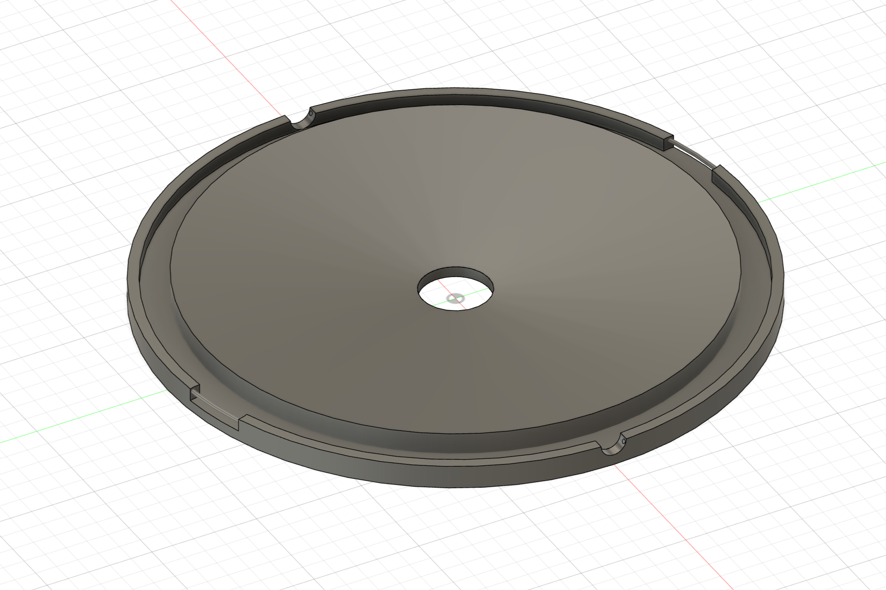
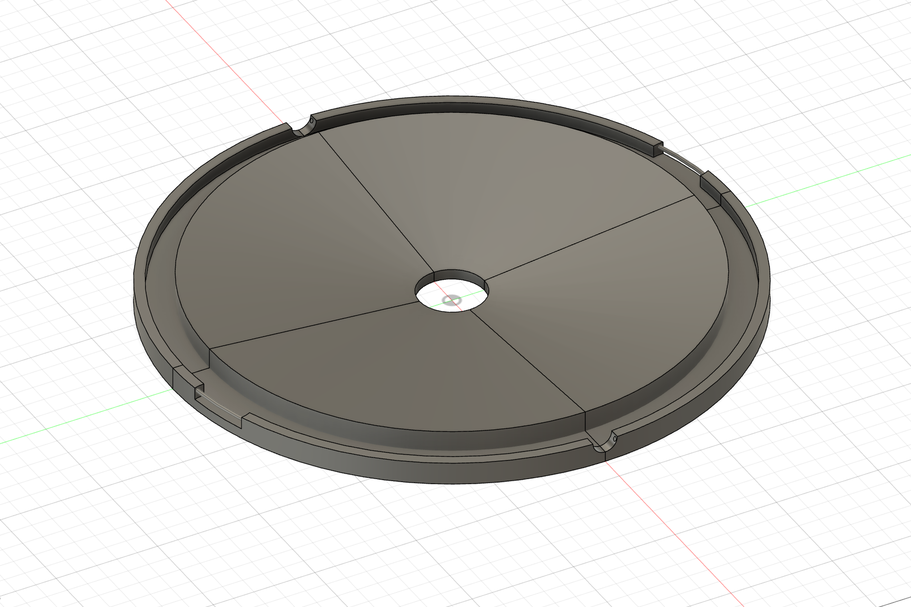

設計
TODO
・CADで設計
・出力できるサイズに分割
CADで設計

取っ手を避ける部分と、引っ掛かりを作る部分は、「穴」の機能を使って凹みを作りました。
引っ掛かり部分にある棒は、「パイプ」を利用。
出力可能サイズに分割

3Dプリンターのサイズ上、出力できるサイズに制限があるため、4分割にしました。
分割する位置が凹みに被っているので、分割位置を移動したい、、！
「移動/コピー」を使うとできるらしいのですが、上手くできなかったので、次回LISAさんにやり方を聞きます。
分割したもの同士を繋げる方法も定まっていないので、それも次回話し合います、、
第7回へ